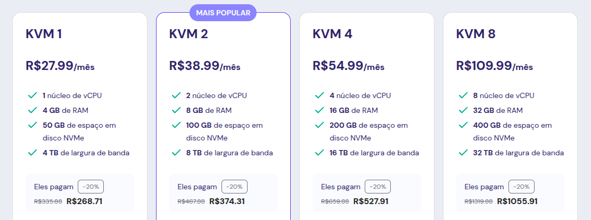
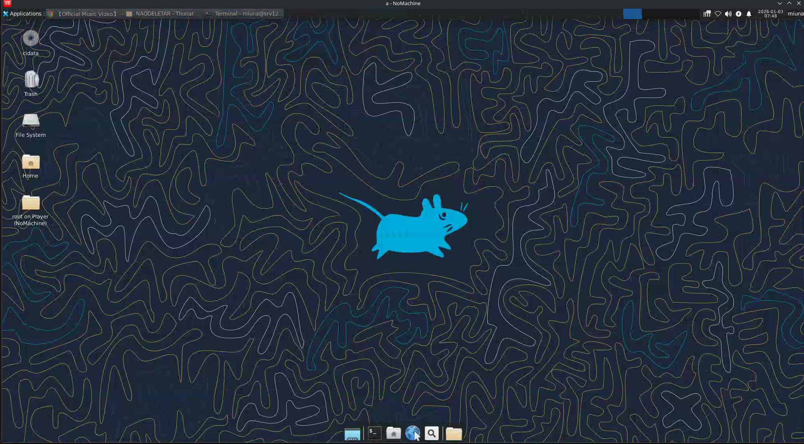
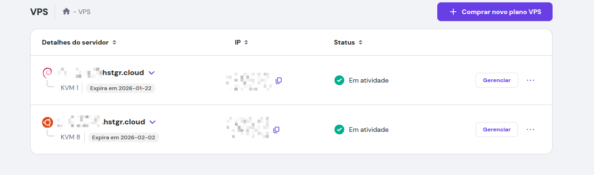
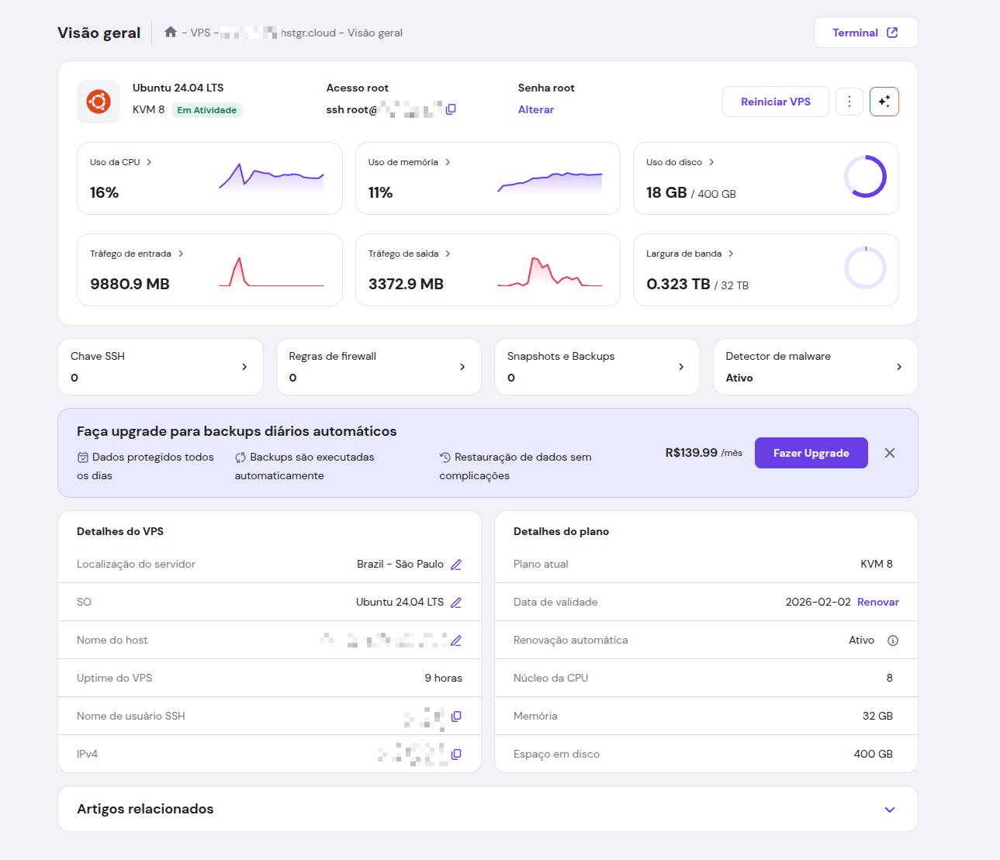

sabe quando vc quer rodar algo pesado, ou precisa de uma internet super rapida (tipo 1gbps+), mas seu pc ou sua net de casa nao tankam?
a soluçao eh ter um Cloud Computer! ou seja, uma vps com interface grafica.
eu testei varias opçoes e a combi mais barata que achei foi usar uma VPS da Hostinger com o ambiente grafico XFCE (que eh super leve) e acessar via NoMachine.
1. O Hardware (VPS)
eu to usando a Hostinger. o ping pro brasil eh decente e o preço eh excelente.
sou parceiro da hostinger e meu link de indicação da desconto!

escolha o plano KVM 2 ou superior pra ter pelo menos 4gb de ram, senao o navegador vai crashar, ok?
2. O Segredo: NoMachine (NX Protocol)
"ah, mas pq nao usar VNC ou RDP?"
pq eles sao lentos demais! o NoMachine usa um protocolo proprio (NX) que comprime o video super bem. a latencia eh tao baixa que parece que o pc ta na sua frente. da ate pra ver video no youtube remoto sem travar!
| Protocolo | Latência | Qualidade | Recomendado? |
|---|---|---|---|
| VNC | Alta | Fraca | ❌ não |
| RDP | Média | OK | ⚠ depende |
| NX (NoMachine) | Baixíssima | Excelente | ✅ sim! |
3. Como configurar (Tutorial Rápido)
eu escolhi o ubuntu lts pela maior compatibilidade e menos chances de dar bugs (espero q ngm aqui precise passar pela experiencia de desbugar o driver de audio de uma vm), e depois instalei o xfce. o linux ja ta pronto. so falta instalar o servidor do NoMachine.
acessa sua vps via SSH e roda isso aqui:
Baixar o NoMachine
(o link pode mudar, entao pega o link do .deb mais atual no site deles se esse falhar)
wget https://download.nomachine.com/download/8.11/Linux/nomachine_8.11.3_4_amd64.debInstalar
sudo dpkg -i nomachine_*.debLiberar a porta (Importante!)
o NoMachine usa a porta 4000. se o firewall tiver ligado, vc nao conecta.
sudo ufw allow 4000/tcp4. Conectando
agora eh so baixar o cliente do NoMachine no seu pc (windows/linux/mac), clicar em "Add", colocar o IP da sua VPS e usar seu usuario e senha do linux (geralmente root ou o usuario q vc criou).
pronto! agora vc tem um pc na nuvem pra deixar farmando jogo, baixando coisas ou codando de qualquer lugar!



instala o tmux ou screen pra deixar processos rodando mesmo depois de fechar a sessão NoMachine. seu "pc na nuvem" vai continuar trabalhando sem vc!